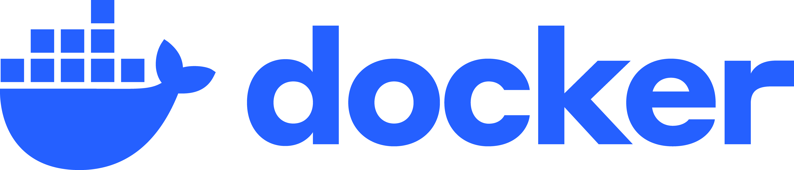

Erick Marroquin
@menene
Contenerización
Proceso de empaquetar una aplicación junto con todas sus dependencias en una unidad estandarizada llamada contenedor.
App + dependencias + config
Funciona igual en cualquier entorno
⚡ Comparte el kernel del sistema operativo host — mucho más ligero que una VM
VMs vs Contenedores
Ventajas y Desventajas
Ventajas
- Portabilidad total
- Reproducibilidad
- Aislamiento eficiente
- Arranque rápido
- Escalabilidad
Desventajas
- Complejidad inicial
- Riesgos de seguridad
- Almacenamiento persistente
- Depuración compleja
Conceptos Importantes
La máquina física donde Docker corre.
Instancia aislada generada por Docker.
Docker
Plataforma de software que utiliza contenedores para crear, desplegar y ejecutar aplicaciones de manera consistente en cualquier entorno.
Lanzado en 2013 por Docker Inc.
El problema que resuelve
Conflictos de
dependencias
Incompatibilidad
entre entornos
Despliegue
complejo
"En mi compu sí corre, pero en el servidor no 😩😭🤬"
¿Por qué elegir Docker?
- 📚 Amplio ecosistema y documentación
- 🔗 Integración nativa con Kubernetes
- 👨💻 Fácil para devs y DevOps
- 🧘 Paz mental
Alternativas


Docker Engine
$ docker client
El punto de entrada del usuario. Traduce comandos como docker run o docker build en llamadas a la API del daemon. Puede ser local o remoto.
Docker daemon
Proceso en background (dockerd) que expone la API REST. Recibe instrucciones del cliente y las delega a containerd. Gestiona imágenes, redes y volúmenes.
containerd
Runtime de alto nivel. Gestiona el ciclo de vida de los contenedores: start | stop | pause | delete. Descarga imágenes y configura almacenamiento. Llama a runc a través de shim.
shim
Proceso intermediario entre containerd y runc. Permite contenedores daemonless: si el daemon se reinicia, los contenedores siguen corriendo. Un shim por contenedor.
runc
Runtime de bajo nivel OCI-compliant. Interfaz directa con las primitivas del kernel: namespaces y cgroups. Crea el proceso del contenedor y luego termina — el shim lo mantiene vivo.
Running containers
El resultado final: procesos aislados corriendo en el kernel del host. Cada contenedor tiene su propio filesystem, red y espacio de procesos, usando namespaces y cgroups.
Proceso completo
Dockerfile
Archivo de texto con instrucciones para construir una imagen.
FROM node:18-alpine
WORKDIR /app
COPY package*.json ./
RUN npm install
COPY . .
CMD ["node", "index.js"]FROM node:18-alpine
WORKDIR /app
COPY package*.json ./
RUN npm install
COPY . .
CMD ["node", "index.js"]FROM node:18-alpine
Imagen base. Node 18 sobre Alpine Linux — solo ~5 MB. Define el punto de partida de todas las capas.
FROM node:18-alpine
WORKDIR /app
COPY package*.json ./
RUN npm install
COPY . .
CMD ["node", "index.js"]WORKDIR /app
Establece el directorio de trabajo dentro del contenedor. Todos los comandos siguientes se ejecutarán desde aquí.
FROM node:18-alpine
WORKDIR /app
COPY package*.json ./
RUN npm install
COPY . .
CMD ["node", "index.js"]COPY package*.json ./
Copia primero solo el package.json. Así Docker puede cachear esta capa — si las dependencias no cambian, no se reinstalan en el próximo build.
FROM node:18-alpine
WORKDIR /app
COPY package*.json ./
RUN npm install
COPY . .
CMD ["node", "index.js"]RUN npm install
Se ejecuta durante la construcción de la imagen. Instala dependencias. El resultado queda guardado como una capa inmutable.
FROM node:18-alpine
WORKDIR /app
COPY package*.json ./
RUN npm install
COPY . .
CMD ["node", "index.js"]COPY . .
Copia el resto del código fuente. Va después del RUN npm install para maximizar el uso del caché.
FROM node:18-alpine
WORKDIR /app
COPY package*.json ./
RUN npm install
COPY . .
CMD ["node", "index.js"]CMD ["node", "index.js"]
Comando por defecto al ejecutar el contenedor. Solo puede haber un CMD — al poner varios, el último prevalece.
Imagen
Cada instrucción del Dockerfile genera una capa inmutable.
Las capas se reutilizan entre builds e imágenes → eficiencia de almacenamiento.
Solo la capa del contenedor es escribible — la imagen en sí jamás cambia.
Contenedor
Instancias en ejecución basadas en una imagen.
Comparten el kernel del host
Filesystem propio por contenedor
Datos persistentes → volúmenes
Docker Hub
Registry centralizado para compartir y descargar imágenes.
Corriendo contenedores
Construir la imagen
docker build -t my-app .build
Lee el Dockerfile y construye cada capa
-t my-app
Le da un nombre (tag) a la imagen resultante
.
Usa el directorio actual como contexto de build
Correr el contenedor
docker run my-appEl contenedor corre, pero está completamente aislado. Sin puertos mapeados, sin acceso a archivos del host, sin red configurada — nadie puede hablar con él desde afuera.
Abrir una puerta: -p
docker run -p 3000:3000 my-apphost:container — el tráfico al puerto 3000 del host llega al puerto 3000 del contenedor
Nuestra app en un contenedor
# docker run -p 3000:3000 my-appUn servidor Node puro que lee index.html y lo devuelve en cada request. Sin dependencias externas.
→ localhost:3000 responde ✓
Al editar index.html en la máquina y recargar el browser...
No cambia nada.
El archivo fue copiado dentro del contenedor al hacer build.
Los archivos están adentro
COPY toma una foto en el momento del build — cambios posteriores no se reflejan sin volver a hacer build.
Montar el directorio con -v
docker run -p 3000:3000 -v .:/app my-appEl directorio del host se monta directamente — al recargar el browser el cambio ya está ahí.
Docker Compose
Un comando que se va haciendo largo...
Antes
docker run \
-p 3000:3000 \
-v .:/app \
my-appCon Compose
docker compose upTodo lo que configuraste a mano queda declarado en un archivo. Un solo comando lo levanta todo.
La misma app de Node — ahora en docker-compose.yml
services:
web:
build: .
ports:
- "3000:3000"
volumes:
- .:/appservices:
web:
build: .
ports:
- "3000:3000"
volumes:
- .:/appservices:
Define los servicios de la aplicación. Cada clave dentro de services es un contenedor independiente.
services:
web:
build: .
ports:
- "3000:3000"
volumes:
- .:/appbuild: .
En lugar de descargar una imagen, Compose construye desde el Dockerfile del directorio actual — la misma app de Node.
services:
web:
build: .
ports:
- "3000:3000"
volumes:
- .:/appports: "3000:3000"
Equivale al flag -p 3000:3000. HOST : CONTENEDOR — el tráfico del puerto 3000 de tu máquina llega al 3000 del contenedor.
services:
web:
build: .
ports:
- "3000:3000"
volumes:
- .:/appvolumes: .:/app
Equivale al flag -v .:/app. El directorio local se monta en el contenedor — cambios en index.html se ven al instante.
Liga Española — 3 servicios, 1 comando
Los contenedores en la misma red se comunican por nombre de servicio, sin necesidad de conocer IPs.
Tres servicios declarados
services:
db:
build: ./db
volumes:
- db-data:/data
backend:
build: ./backend
ports:
- "8000:8000"
volumes:
- db-data:/data
depends_on:
db:
condition: service_completed_successfully
frontend:
build: ./frontend
ports:
- "5173:5173"
depends_on:
- backend
volumes:
db-data:services:
db:
build: ./db
volumes:
- db-data:/data
backend:
build: ./backend
ports:
- "8000:8000"
volumes:
- db-data:/data
depends_on:
db:
condition: service_completed_successfully
frontend:
build: ./frontend
ports:
- "5173:5173"
depends_on:
- backend
volumes:
db-data:db
Contenedor one-shot: corre un script Python que crea la base SQLite con los 20 equipos de LaLiga y escribe el archivo en el volumen db-data. Una vez terminado, el contenedor se detiene.
services:
db:
build: ./db
volumes:
- db-data:/data
backend:
build: ./backend
ports:
- "8000:8000"
volumes:
- db-data:/data
depends_on:
db:
condition: service_completed_successfully
frontend:
build: ./frontend
ports:
- "5173:5173"
depends_on:
- backend
volumes:
db-data:backend · FastAPI
Monta el mismo volumen db-data para leer el SQLite. El condition: service_completed_successfully garantiza que espera a que db termine de seedear antes de arrancar.
services:
db:
build: ./db
volumes:
- db-data:/data
backend:
build: ./backend
ports:
- "8000:8000"
volumes:
- db-data:/data
depends_on:
db:
condition: service_completed_successfully
frontend:
build: ./frontend
ports:
- "5173:5173"
depends_on:
- backend
volumes:
db-data:frontend · React
App de Vite + React que hace fetch a localhost:8000/teams y renderiza las tarjetas de cada equipo. Espera a que el backend esté listo antes de arrancar.
Tres servicios, un comando
# docker compose updb
Seedea el SQLite en el volumen y termina
backend
FastAPI en :8000 — GET /teams devuelve JSON
frontend
React en :5173 — muestra los 20 equipos
Comandos Esenciales
docker pull <image>
Descarga una imagen de Docker Hub
docker build -t nombre .
Construye imagen desde el Dockerfile actual
docker run -p 8080:80 nginx
Ejecuta contenedor con mapeo de puertos
docker ps
Lista contenedores en ejecución
docker stop <id>
Detiene un contenedor en ejecución
docker rm <id>
Elimina un contenedor detenido
docker compose up -d
Levanta todos los servicios en segundo plano
docker compose down
Detiene y elimina servicios del compose